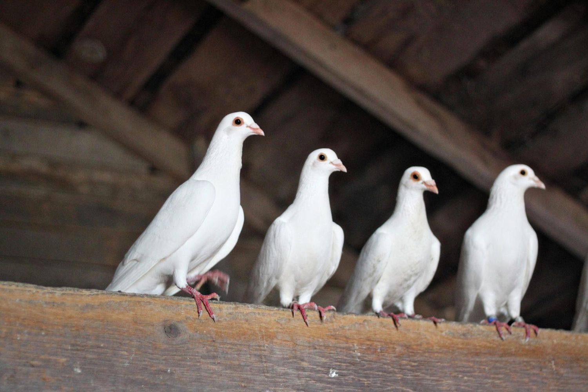
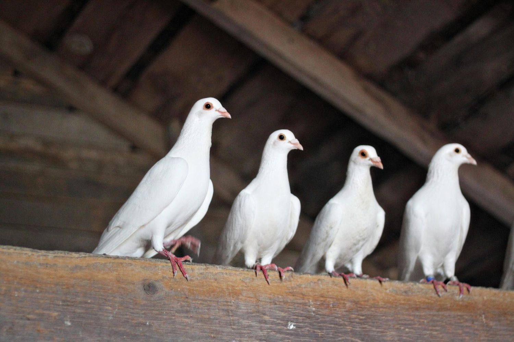

Birds
While birds are often appreciated for their beauty and song, certain species can become pests when they invade homes and properties. Birds like pigeons, sparrows, and starlings can cause damage to buildings, create unsanitary conditions, and introduce parasites and diseases.
How They Invade Homes
- Birds can enter homes through open windows, doors, or vents, especially if left unscreened.
- They often nest in chimneys, attics, soffits, and gutters, using small gaps to access these areas.
- Birds may find their way into dryer vents or exhaust fans, where they build nests that can block airflow.
- Nesting materials and droppings can accumulate on roofs, creating structural damage and health risks.
- Large bird populations may be attracted to food sources like bird feeders, garbage, or gardens, encouraging them to linger near your home.
How to Prevent Infestations
- Install bird netting, spikes, or wire mesh to block entry points like vents, chimneys, and openings in the roof.
- Use screens on windows and doors to prevent birds from flying inside.
- Regularly clean gutters and roof areas to remove nesting materials and prevent buildup.
- Limit food sources by keeping garbage cans sealed and reducing bird feeder usage if birds become problematic.
- Set up reflective objects, like shiny tape or decoy predators, to deter birds from nesting near your home.
- Close off potential nesting sites in attics and sheds by sealing any gaps or openings.